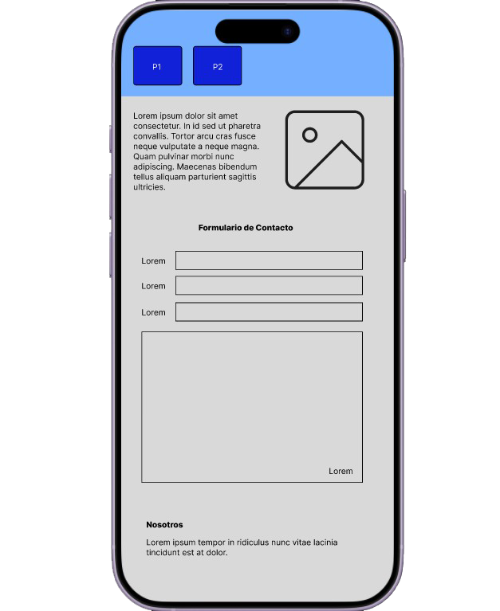

Proyecto UX/UI · Módulo 3
Centro de Estudios Alderete
Prototipo de baja fidelidad para una web pública con noticias e intranet, pensado para informar a visitantes y facilitar la comunicación interna.
Resumen
Este proyecto propone una solución web para un centro de estudios con dos contextos principales: una parte pública para visitantes y una intranet para usuarios internos. La propuesta considera información institucional, contacto, noticias y comunicación organizada por temáticas.
Las pantallas definidas fueron una landing con formulario y sección “Nosotros”, una vista de noticias con acceso a login y una intranet tipo foro/mensajes con accesos a calendario y archivos.
Objetivo
Diseñar una solución inicial que entregue información institucional, mantenga informada a la comunidad mediante novedades y permita acceso a una intranet con mensajería y accesos internos.
Proceso
Ideación
Se definió una propuesta con parte pública e intranet, considerando necesidades distintas para visitantes y usuarios internos.
Moodboard
La dirección visual se orientó a una interfaz confiable, institucional, clara, ordenada y accesible, con referentes para landing, noticias e intranet.
Prototipo
Las tres pantallas fueron transferidas a Figma en baja fidelidad, manteniendo flujo y jerarquía de la información.
Moodboard y referentes
El moodboard reunió referentes de sitios institucionales, páginas de noticias con cards y plataformas colaborativas tipo Slack, Teams o Discord, buscando una navegación consistente y componentes simples.
La propuesta visual se apoyó en tipografía sans serif, paleta neutra con acento institucional y énfasis en legibilidad, contraste y separación clara entre bloques.
Prototipo en Figma
El prototipo low-fi permitió visualizar con más claridad la landing, la sección de noticias con acceso a intranet y la vista interna de foro/mensajes.
También ayudó a revisar jerarquía, navegación y organización antes de pasar a una etapa de mayor desarrollo visual o técnico.

Video del flujo
Registré el flujo del prototipo de figma en video para observar mejor la secuencia entre pantallas y revisar la navegación de una forma más cercana a la interacción real.
Este registro me ayudó a mirar la baja fidelidad como una etapa útil para validar estructura y recorrido antes de desarrollar.
Ver videoAprendizaje
“Prototipar no es construir menos, sino pensar antes de construir.”
Este proyecto me ayudó a valorar la baja fidelidad como una etapa real del proceso. La evaluación heurística también mostró que el flujo base funcionaba, pero necesitaba mayor claridad de navegación y mejor feedback en formularios y acciones internas.
Cierre del proyecto
Este proyecto me permitió reunir ideación, referentes visuales, prototipado de baja fidelidad y reflexión sobre la experiencia antes de desarrollar.
En el siguiente documento se puede revisar el trabajo completo presentado como resultado final del módulo.
Ver documento final